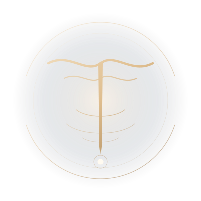

„Hinter diesem Zaun aus Scham wartet nicht deine Gefahr, sondern dein Potenzial.“
Erst wenn du im Dunkeln stehen bleibst, ohne wegzuspringen, verliert er seine Spannung.

Kein Kurs. Ein begehbarer Klang- und Erfahrungsraum bis auf 900 Meter Tiefe.
Oben will der Verstand alles steuern. Sinke mit jeder Bewegung tiefer in Stille und reine Frequenz.
AbtauchenWähle den Zustand deines Nervensystems und höre mit Kopfhörern hinein.
Die Kernsätze erscheinen hier ruhig, sobald sie ausgesprochen wurden.
Erst wenn du im Dunkeln stehen bleibst, ohne wegzuspringen, verliert er seine Spannung.
Keine Checklisten, kein Druck. Nur deine eigene Erfahrung unter der Oberfläche.